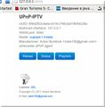
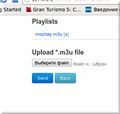
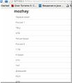
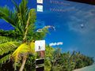
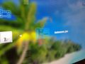
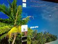
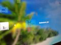
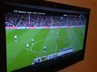
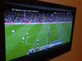

- О программе
- Возможности
- Требования
- Скачать
- Описание API для разработчиков
- Картинки
- Видео
- Установка и настройка
- Часто задаваемые вопросы
- Пример плейлиста
- Пример файла настроек
- Обратная связь
- Пожертвования
- Мои проекты
- Благодарность
О программе
xupnpd - eXtensible UPnP agent
Эта программа является простым и переносимым UPnP медиа-сервером для осуществления IPTV трансляций в рамках домашней сети на DLNA совместимых устройствах без поддержки мультикастинга или плейлистов со списком Интернет-адресов источников контента.
xupnpd может быть установлен на домашний WiFi роутер, что даст возможность просмотра Интернет-телевиденья на множестве домашних устройств без использования компьютера и специализированных ТВ приставок Вашего домашнего Интернет провайдера (при условии отсутствия шифрования). Кроме того существует возможность просмотра спутникового телевиденья на множестве телевизоров имея всего один ресивер.
Программа не имеет сертификата соответствия требованиям DLNA но умеет анонсировать в локальную сеть M3U список юникаст или мультикаст ТВ-каналов используя UPnP/DLNA механизмы в объеме достаточном для просмотра IPTV местного провайдера или роликов с Vimeo на Sony PlayStation 3, планшетах и многих моделях телевизоров Smart TV.
В случае мультикаст каналов программа может осуществлять преобразование в юникаст поверх HTTP сама либо с использованием udpxy. При преобразовании не происходит транскодирования сигнала — только смена способа доставки до плеера. Существует возможность просмотра как SD так и HD каналов.
Все что нужно — роутер или компьютер под управлением OS Linux и DLNA совместимый плеер/телевизор.
Работоспособность xupnpd проверялась на следующем оборудовании:
- PC под управлением OS Ubuntu 10.04
- D-Link DIR-320 (DD-WRT v24 preSP2 13064, mipsel)
- Asus WL-500gP
- Asus N-16
- Asus RT-N56U
- Zyxel Keenetic
- TP-LINK WR841ND
- Телевизоры Samsung серий B/C/D
- Ресивер спутникового ТВ DreamBox DM500HD
- Sony PlayStation 3 с заводской прошивкой
- Iconbit HDS4L, WDTV Live
- HTC Desire (Android + UPnPlay/BubbleUPnP + Vplayer/MX Video Player)
- Телевизоры Samsung UE46D6510, Samsung UE40D5000PW, Samsung LE40c550, Samsung LE40B650, Samsung UE40C6000, Samsung US46ES6100, Samsung UE32EH6037, LG PZ750, Sony 26EX231, Philips 47pfl7606h
- Microsoft Windows Media Player 11, VideoLAN (Ubuntu 10.04)
Возможности
- Встроенный DLNA/UPnP медиа-сервер для анонса списка каналов или медиа-файлов в локальную сеть
- Поддержка HTTP источников (список URL с адресами потоков в Интернете)
- Встроенный мультикаст прокси для IPTV от домашнего Интернет-провайдера
- Классический медиа-сервер для предоставления общего доступа к видео-файлам в домашней сети
- Поддержка YouTube, Vimeo, Vkontakte, IVI, GameTrailers, AG и т.п.
- Просмотр видео высокого разрешения (HD)
- Интернет-радио
- Механизм расширений на языке Lua для поддержки новых источников видео
- Отсутствие транскодирования
- M3U плейлисты
- Автоматическое обновление списка роликов (фидов) или каналов по расписанию
- Группировка контента и древовидное отображение
- Списки контроля доступа и родительский контроль
- Web-интерфейс и возможность создания внешних программ для управления
- Возможность модификации путем Lua-скриптинга
- Open source
Требования
- Маршрутизатор* на Atheros или Broadcom чипсете (ar71xx, mipsel и т.п.), например: D-Link DIR-320, ASUS WL-500GP, TP-LINK WR841ND или Zyxel Keenetic
- Прошивка OpenWrt или DD-Wrt (либо другие кастомные прошивки на основе Linux)
- Опционально udpxy
Скачать
Готовые бинарные сборки и исходные тексты можно получить тут.
Картинки


{kind=link}
{kind=link}
{kind=link}
 


{kind=link}
{kind=link}

 
{kind=link}
Видео
Видео-обзоры и руководства тут.
Установка и настройка
- Загрузить архив на маршрутизатор (scp,sftp,ftp)
- Распаковать (например: 'tar zxf xupnpd.tar.gz')
- Запустить ('xupnpd/xupnpd-mipsel' или 'xupnpd/xupnpd-ar71xx')
- Перейти браузером по ссылке 'http://192.168.1.1:4044' (192.168.1.1 - адрес Вашего маршрутизатора)
- Загрузить Ваш IPTV плейлист в формате M3U
- Наслаждаемся IPTV в Вашем DLNA-совместимом плеере
Часто задаваемые вопросы
- wl500g+xupnpd
- SamsungTV+xupnpd
- Eltex NTE-RG-1402F-W forum
- iptv-cheb.narod.ru
- iptv-cheb.narod.ru - xupnpd manual
- iptv-cheb.narod.ru - Zyхеl Кееnеtiс Litе manual
- iptv-cheb.narod.ru - Zyхеl Кееnеtiс manual
Пример плейлиста
#EXTM3U name="My IPTV" #EXTINF:0 logo=http://butovo.com/iptv/iskra_channels_files/perviy00.jpg type=mpeg dlna_extras=mpeg_ps_pal ,Channel 1 udp://@234.5.2.8:20000 #EXTINF:0,Channel 2 http://192.168.1.1:4022/udp/234.5.2.2:20000 #EXTINF:0 group-title="Main",Channel 3 http://020.mozhay.tv #EXTINF:0 logo=http://b.vimeocdn.com/ts/204/056/204056508_200.jpg type=mp4 plugin=vimeo,The Curious Fate of Humankind http://vimeo.com/30381893 #EXTINF:0 logo=http://i.ytimg.com/vi/kffacxfA7G4/1.jpg type=mp4 plugin=youtube,Justin Bieber - Baby ft. Ludacris http://www.youtube.com/watch?v=kffacxfA7G4&feature=youtube_gdata #EXTINF:0 logo=http://i.ytimg.com/vi/KQ6zr6kCPj8/1.jpg type=mp4 plugin=youtube,LMFAO - Party Rock Anthem ft. Lauren Bennett, GoonRock http://www.youtube.com/watch?v=KQ6zr6kCPj8&feature=youtube_gdata
'#EXTM3U' атрибуты:
- name - название плейлиста
- type - тип видео по умолчанию
- dlna_extras - DLNA профиль по умолчанию
- plugin - название обработчика (расширения) для всего плейлиста по умолчанию (для YouTube, Vimeo и т.п.)
'#EXTINF' атрибуты:
- logo - URL логотипа (картинка в формате jpeg)
- group-title - название группы (элементы с одинаковым значением группируются в одной папке)
- type - тип видео
- dlna_extras - DLNA профиль
- plugin - название обработчика (расширения)
Атрибут 'type' может иметь следующие значения: avi, asf, wmv, mp4, mpeg, mpeg1, mpeg2, ts, mp2t, mp2p, mov, mkv, 3gp, flv, aac, ac3, mp3, ogg, wma
Атрибут 'dlna_extras' может иметь следующие значения: none, mpeg_ps_pal, mpeg_ps_pal_ac3, mpeg_ps_ntsc, mpeg_ps_ntsc_ac3, mpeg1, mpeg_ts_sd, mpeg_ts_hd, avchd, wmv_med_base, wmv_med_full, wmv_med_pro, wmv_high_full, wmv_high_pro, asf_mpeg4_sp, asf_mpeg4_asp_l4, asf_mpeg4_asp_l5, asf_vc1_l1, mp4_avc_sd_mp3, mp4_avc_sd_ac3, mp4_avc_hd_ac3, mp4_avc_sd_aac, mpeg_ts_hd_mp3, mpeg_ts_hd_ac3, mpeg_ts_mpeg4_asp_mp3, mpeg_ts_mpeg4_asp_ac3, avi, divx5, mp3, ac3, wma_base, wma_full, wma_pro
Пример файла настроек
xupnpd.lua
-- Название сетевого интерфейса для анонса медиа-сервера в локальную сеть, например:'eth0', 'br0', 'br-lan' (зависит от оборудования)
cfg.ssdp_interface='br0'
-- Заставляет хост получать собственные мультикаст анонсы в случае когда и сервер и плеер находятся на одной машине
cfg.ssdp_loop=0
-- HTTP для входящих соединений (в т.ч. для Web-интерфейса)
cfg.http_port=4044
-- Определяет куда писать логи (syslog,local0-local7)
cfg.log_facility='local0'
-- Запускаться в режиме "демона"
cfg.daemon=true
-- Не писать логи и не создавать pid-файл
cfg.embedded=true
-- Включает трассировку SSDP анонсов (работает только когда cfg.daemon=false)
-- 0-выключить, 1-основная информация, 2-сообщения целиком
cfg.debug=1
-- URL для использования внешнего прокси мультикаст потоков (адреса вида: udp://@...). Для включения встроенного прокси закомментировать!
--cfg.udpxy_url='http://192.168.1.1:4022'
-- Имя сетевого интерфейса (обычно WAN) для получения мультикаст потоков от провайдера через встроенный прокси
cfg.mcast_interface='eth1'
-- Способ проксирования юникаст HTTP потоков
-- 0-не проксировать (анонсировать URL как есть), 1-проксировать только радио, 2-проксировать (пропускать через себя) ВСЕ
cfg.proxy=2
-- Сетевой таймаут
cfg.http_timeout=15
-- Включить передачу DLNA extras
cfg.dlna_extras=true
-- Режим совместимости с XBox 360
cfg.xbox360=false
-- Включить UPnP/DLNA уведомления об изменениях в плейлистах
cfg.dlna_notify=true
-- Группировать контент по 'group-title'
cfg.group=true
-- Отображаемое название устройства
cfg.name='UPnP-IPTV'
-- Уникальный идентификатор устройства (если nil, то формируется новый при каждом запуске)
cfg.uuid='60bd2fb3-dabe-cb14-c766-0e319b54c29a'
-- Тип IPTV потока по умолчанию (mpeg, mpeg1, mpeg2, ts)
cfg.default_mime_type='mpeg'
-- Частота обновления фидов в секундах (0 - не обновлять)
cfg.feeds_update_interval=0
-- Плейлисты
playlist=
{
{ './playlists/mozhay.m3u', 'Mozhay.tv' }, -- M3U плейлист с названием Mozhay.tv
{ './localmedia', 'Local Media Files', '127.0.0.1;192.168.1.1' } -- Папка с файлами, доступна только с адресов 127.0.0.1 и 192.168.1.1
}
-- Фиды (название расширения, наименование фида, отображаемое название фида)
feeds=
{
{ 'vimeo', 'channel/hd', 'Vimeo HD Channel' },
{ 'vimeo', 'channel/hdxs', 'HD Xtreme sports' },
{ 'vimeo', 'channel/mtb', 'Mountain Bike Channel' },
{ 'youtube', 'channel/top_rated', 'YouTube Top Rated' },
}
Обратная связь
Пожертвования
Мои проекты
Благодарность
- Zyxmon
- happy.neko aka Locky
- Laigor
License: GPL
Copyright (C) 2014-2015 Антон Бурдынюк
clark15b@gmail.com